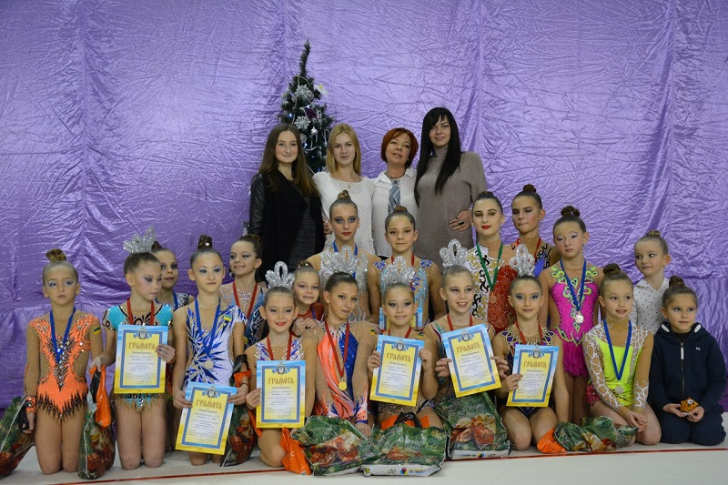

С Новым Годом, друзья!
Поздравляем наших тренеров и юных гимнасток с Новым годом!
Желаем новых спортивных достижений, чтобы все творческие задумки тренера с лёгкостью исполнялись, чтобы тяжёлые тренировки обязательно вознаграждались счастливыми улыбками гимнасток, стоящих на пьедестале!
Поздравляем мам, пап, бабушек и дедушек наших юных гимнасток! Спасибо за вашу помощь и заботу!
Здоровья, благополучия, взаимопонимания и удачи в Новом году!
Турнир "Новогодние звездочки - 2016"
24 декабря в г.Черноморск прошел турнир "Новогодние звездочки - 2016". Для нашей команды стало уже традицией в преддверии Нового Года подводить спортивные итоги года уходящего именно этими соревнованиями. Благодаря слаженному тренерскому коллективу в лице Вишняковой Марины Андреевны, Чичковой Анны Анатольевны, Ветошниковой Марии Александровны, Скибицкой Ольги Михайловны, команда наших гимнасток показала достойные результаты:
2011 г.р. 1 место - Керимова Николь
2010 г.р. 1 место - Паламарчук Яна
Яцкевич Маша
2009 г.р. 1 место - Грабилина Полина
Бойченко Каролина
Струтинская Мишель
2 место - Вишневская Соня
Левченко Аня
Глек Настя
2008 г.р. 1 место - Сидало Полина
Бакала Лиза
Калиновская Соня
2 место - Сенюшкина Василиса
Еременко Соня
Бардина Люба
Бовкун Ксюша
3 место - Шендриченко Соня
2007 г.р. 1 место - Белуш Соня
Горобец Полина
2 место - Кирдогло Олеся
2006 г.р. 1 место - Гузун Ксюша
Гавриш Аня
Горбань Настя
2 место - Бошкова Юля
2005 г.р. 2 место - Коневщинская Лера
2004 г.р. 1 место - Солодарь Лера
Едалова Аня
2 место - Ляшенко Настя
2003 г.р. 3 место - Елисеева Катя
2002 г.р. 2 место - Капова Ира
2001 г.р. 1 место - Плясецкая Настя
Выражаем огромную благодарность нашим тренерам за подготовку девочек к соревнованиям, за ежедневный кропотливый труд, за внимание ко всем без исключения детям , за любовь к своему делу!
